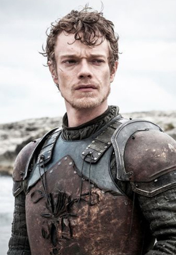
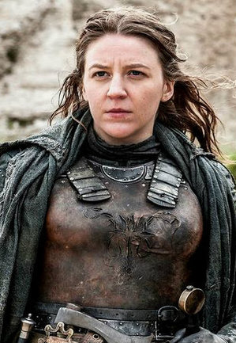
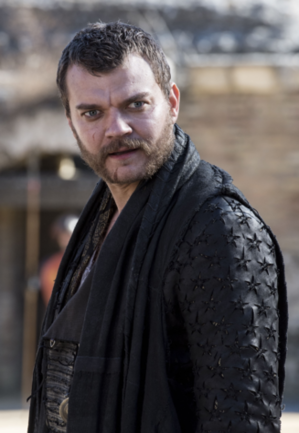
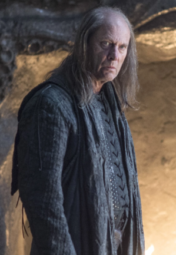

| Nom | Image | Biographie |
|---|---|---|
| Theon Greyjoy |  |
Interprète Alfie Allen Saison(s) 1, 2, 3, 4, 5, 6, 7 Titre(s) Prince des Îles de Fer (sous Yara) Prince de Winterfell (autrefois) Alias Schlingue (par Ramsay) Petit Theon (par Euron) Statut Vivant Origine Pyk Allégeance Maison Greyjoy Maison Stark Maison Targaryen Maison Bolton (otage; anciennement) Culture Fer-nés Religion Dieu Noyé Parents Balon Greyjoy - père † Alannys Greyjoy - mère Fratrie Rodrik Greyjoy - frère † Maron Greyjoy - frère † Yara Greyjoy - sœur |
| Yara Greyjoy |  |
Interprète Gemma Whelan Saison(s) 2, 3, 4, 6, 7 Titre(s) Reine des Îles de Fer (prétendante) Lady Ravage de Pyk (prétendante) Statut Vivante Origine Pyk Allégeance Maison Greyjoy Culture Fer-nés Religion Dieu Noyé Parents Balon Greyjoy - père † Alannys Greyjoy - mère Fratrie Rodrik Greyjoy - frère † Maron Greyjoy - frère † Theon Greyjoy - sœur |
| Euron Greyjoy |  |
Interprète Pilou Asbæk Saison(s) 6, 7, 8 Titre(s) Roi des Îles de Fer Roi du Sel et du Roc Fils du Vent de Mer Seigneur Ravage de Pyk Statut Vivant Origine Pyk Allégeance Maison Greyjoy Culture Fer-nés Religion Dieu Noyé Fratrie Balon Greyjoy - frère † Aeron Greyjoy - frère Alannys Greyjoy - belle-sœur |
| Balon Greyjoy |  |
Interprète Patrick Malahide Saison(s) 2, 3, 6 Titre(s) Roi des Îles de Fer et du Nord Seigneur des Îles de Fer Roi du Sel et du Roc Fils du Vent de Mer Alias Balon Greyjoy, neuvième de son nom depuis le Roi Gris Envahisseur du Nord Statut Décédé Mort Projeté du haut du pont par son propre frère Euron Greyjoy Origine Pyk Allégeance Maison Greyjoy Culture Fer-nés Religion Dieu Noyé Relation Alannys Greyjoy - femme Enfants Rodrik Greyjoy - frère † Maron Greyjoy - frère † Yara Greyjoy - fille Theon Greyjoy - sœur |